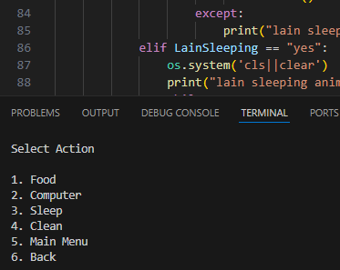
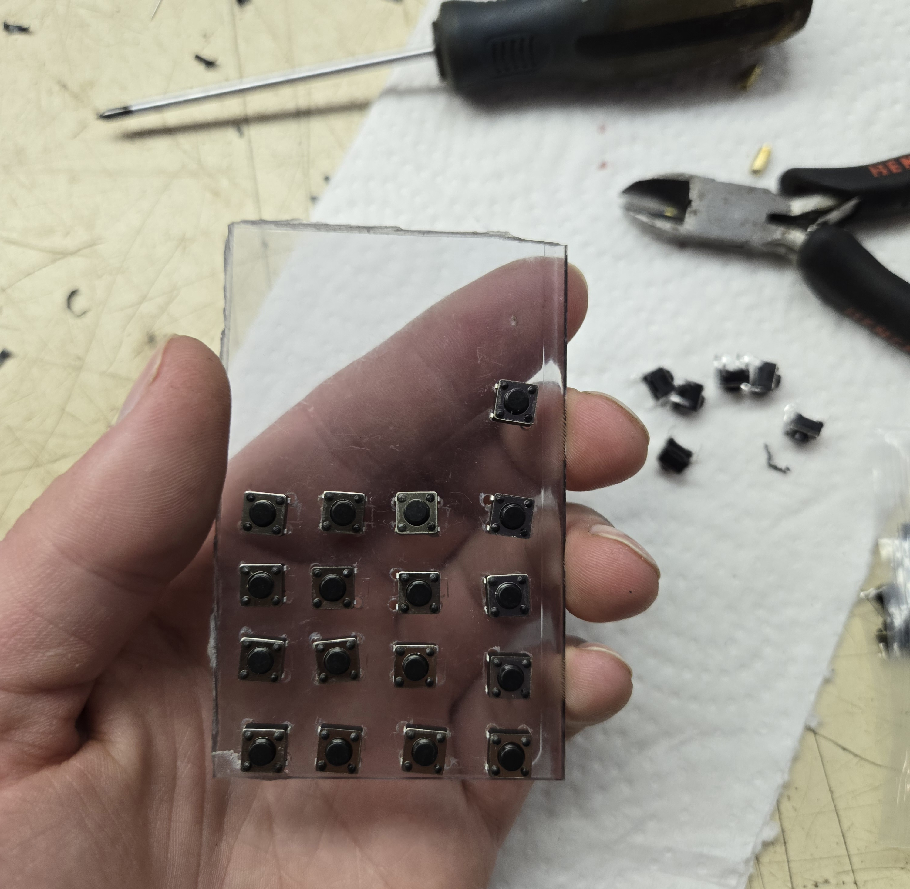

Virtual Friend
4 losers

This is a virtual friend style game I made, inspired by the Tamagotchis of the early 2000's and other "virtual pet" style games.
It's not the most exciting gameplay wise, but it was a lot of fun to make and to see if I could even do it
Step 1:
The friend in question is Lain from the 1998 anime "Serial Experiments Lain". I made simple animations out of screenshots from the anime, isolating Lain and segmenting the body where I would make it move


I've never tried animating like this before but it turned out pretty good I think. Nice for me because I suck at drawing and I just use a trackpad on my computer so it can be difficult to get details right. And I didn't need much motion, just enough to add a bit of life/make simple idle animations. Here is the result
Looking closely it looks a bit messy, but considering my display is 2 inches-240x320, it doesn't really matter
Here is another example, with the original clip on the right, and my edit on the left


[I'm not the most skilled at using "clone stamp" style tools so you can see where I removed the persons red jacket from the original, the background looks a bit weird. But I think it's only noticable if your looking for it, and see it side by side with the original. Seeing my edit by itself it's unnoticable I think.
Step 2:
Next I wrote out the main portion of the code without any animation, just text based, to get everything functioning in order. 165 lines of code/ 6 functions is all it took
Step 3:
Next is figuring out how ill display/hide/navigate through my animations with button inputs. I experimented with displaying my animations directly into the linux terminal but the few libraries I tried seemed to have the limitation of it turning out VERY pixely. It is kind of a vibe though, especially when you think about how the old Tamagotchis used to look. It was cool to try anyways and I might do something like this for another project.

In the end I decided on building my first python GUI, which I made using the Tkinter library. [I would later learn that this is notoriously bad at handling animation lol]. Basically you cant just load up a gif file like any other image you have to program Tkinter to go through each frame and repeat. Fine and dandy. But then I discovered that switching back and forth from each gif makes them incrementaly speed up, so every time you press a button poor lain is dancing like she took too much Accela in club Cyberia This took some messing around for me to get working properly, as well as other bugs with tkinters gif handling where it would display the animations all distorted for some reason. In the end the solution was to import the PIL library and use it to open the image as a variable first, and then pass it onto tkinters photoimage function. A bit silly and round about but it worked like a charm :).
Step 4:

Next I created 3 variables for Hunger/Mood/Energy that start at 100 and I would schedule a function to decrease their values by 1 every x minutes. And also add x amount back on when completeing a task through
the Action Menu I made, such as sleeping to increase Energy. Still fiddling with the values and decay rates to make it not too annoying. And I also had to make sure it doesn't go negative and also you can't overcharge past 100 by spamming Actions.
I think the old Tamagotchis if you got down to 0 your pet would just straight up die, but thats so cruel lol. Maybe I'll make Lain transcend to the wired if she stays awake too long lol idk
I also made it so the stats dont start to decay until youve gone through the first 2 intro screens and actually started the "game", and it's kind of nice too as now when you exit from the Action Menu it acts as a sort of Pause screen
if you want to take a break

Step 5:
TO DO:: At this point in the game I have the program controlled by keyboard presses [# 1-9], so to have it run on my rpi I need to import the gpiozero library and change my keybinds to gpio button presses.
Seeing as I have it running beautifully on windows I decided to make it a standalone
executable file using pyInstaller. What this does is bundles up what is required for python to run the script, so that people who don't have python installed on their computers can still run my program. Download link here
Step 6:
This step was a bit of a pain to get working, took me 2 days of fiddling. The driver for this screen is a bit depreciated and doesn't work with new images of Raspbian OS [bookworm]so I had to go online and find a legacy version of bullseye. This is my second waveshare product/display/screen I've bought that I've really struggled with getting to work. The documentation from the manufacturer leaves something to be desired. But at last here we are displaying the desktop through framebuffering through SPI.
Step 7:
With my animations and menus sorted out, I figured the raspberry pi is way too powerful for just playing gifs, why not add every episode of the show into a menu as well. Next is programming a little mp4 video playback controller that my buttons can interface with.
Here is where I discover the limitations of SPI. The framerate is pretty poor slow. I've yet to dedicate some time into seeing if this can be optimized. Considering the headache of getting this to work at all for the framerate I wish I could have went with a normal HDMI connection but at the same time this screen only cost me $16 and I don't think they even make hdmi screens this tiny lol, and I did end up learning a bunch anyways. I'm sure I'll have other projects better suited for this type of display in the future. I also want to buy a little speaker amp circuit board, i got some super cheap $2.50 micro speakers that I think I can fit in the remote for some sound
Step 8:
Next is onto forcing my program to automatically open in full screen mode everytime the computer boots up, as well as hiding the window bar at the top and the exit and minimize buttons as well. I might add in a special passcode/backdoor with my buttons that will kill my program and take you back to the desktop or terminal or something. We will see
Step XX:
Hardware:: The case is an old Zenith tv remote I found in the e-waste bin at the dump. I've reused the button caps and placed my own switches inside underneath. The remote was really gross when I found it so I gutted it and gave it a scrub with a toothbrush lol.


Cutting a hole for my screen

When connecting to the display with the provided port, the wires stick out the side too much so that
I can't close the case up, so I cut the connector off and soldered the wires directly to the pcb.
I used the nice hard plastic case of an old cassette tape, cut to size with my dremel, to mount my switches on.
Programming a power button same way as I did on my VHS game rig. And buttons 0-9, Volume up+down, Channel up+down to the GPIO pins. Now that the code is programmed and everything is wired up it would be a breeze to add in other characters or some of my own designs, and I have set it up that it can be added in on a "Friend Select" menu right when you boot up. Not sure if
I ever will though. All you'd really have to do it copy/paste the main code and swap out the animation art files/maybe edit a menu or too. I do think a virtual friend Carl from "Aqua Team Hunger Force" would be 2wicked.
